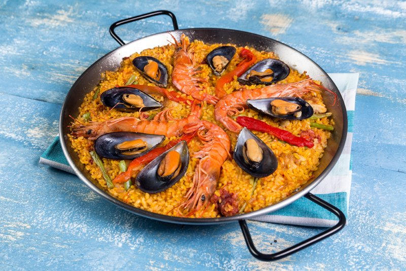

Pasatiempos
- Videojuegos
- Peliculas
- Viajar
- Estudiar
- Escuchar Musica
Comidas
- Tarta
- Patatas
- Arroz
- Hamburguesa
- Paella
- XBOX ONE
- Es una consola creada por la compañía Microsoft en 2013
- Disco Duro
- Dispositivo de memoria de gran capacidad integrado en los ordenadores
- Monitor
- Es el principal dispositivo de salida (interfaz), que muestra datos
- Teclado
- Conjunto de las teclas, los botones u otros dispositivos táctiles con los que se manejan diversos aparatos o máquinas.
- Ordenador
- Es una maquina electronica que recibe y procesa datos para convertilos en datos utiles
- 350 g carne de ternera para guisar cortada en trozos tamaño bocado
- 200 g salsa de tomate (mejor casera)
- 1 cebolla
- 200 ml de vino blanco (1 vaso)
- 1 cebolla
- 2 dientes de ajos
- 100 ml vino blanco o cerveza
- 300 ml de agua aprox
- 2 zanahorias medianas
- 3 patatas especial para cocer
- 1 hoja de laurel
- 1/4 de guindilla opcional
- sal y pimienta negra
- aceite de oliva virgen extra
- perejil fresco para la terminación
- Poner la olla al fuego fuerte con un chorro de aceite y dorar la carne, una vez dorada, pasarla a un plato
- Si fuese necesario, añadir un poquito más de aceite y agregar la cebolla y los ajos picaditos y dorar. Agregar las zanahorias peladas y cortadas en rodajas.
- Agregar el vino, dejar evaporar unos segundos, añadir la salsa de tomate, el laurel, la guindilla y el agua. Espolvorear sal y pimienta negra. Añadir la carne Cocinar durante 15 minutos a fuego medio-bajo
- Añadir las patatas que cortaremos en cuartos cascándolas para favorecer que suelten almidón y engorde la salsa del guiso. Cocinar unos 18 o 20 minutos o hasta que estén tiernas.
- Dejar reposar el guiso durante 5 minutos y servir con un poquito de perejil
- 1 kg. de patatas (a ser posible para cocer)
- 2 l. de agua ( o hasta que queden cubiertas)
- 10 g. de sal para cocer las patatas y un pizca al final del proceso (al gusto)
- 60 g. mantequilla
- 100 ml. leche entera
- 2 g. de pimienta negra recién molida (opcional)
- Finalmente Horneamos
- Debemos cocer las patatas enteras, sin pelar e intentando que sean todas del mismo tamaño. Por un lado las coceremos con piel para evitar que el agua de la cocción se introduzca en la patata dejándola un poco aguada, lo que sería perjudicial para la textura final del puré.
- Debemos intentar que todas sean del mismo tamaño, ya que el punto de cocción de una patata grande será distinto al de una patata pequeña en un mismo tiempo. Las patatas más grandes quedarán algo crudas o las pequeñas demasiado cocidas.
- Cocemos las patatas introduciéndolas en una cazuela y cubriéndolas de agua fría ligeramente salada.
- Las coceremos durante unos 30 minutos, dependiendo un poco del tamaño de las patatas que hayamos elegido. Podemos comprobar que las patatas están en su punto cuando al pincharlas con un cuchillo estas no ofrecen resistencia. Nos permiten pincharlas y retirar el cuchillo sin que se deshagan.
- Lentejas
- Lentejas 250g
- Pimiento verde 100g
- Cebolla 80g
- Puerro 70g
- Zanahoria 100g
- Patata 250g
- Salsa de tomate casera 50g
- Sofreir a fuego bajo las verduras
- Agregamos salsa de tomate
- Añadimos las lentejas y patatas con agua y cocemos
- Servimos las lentejas
- Pizza
- Harina de trigo 160g
- Agua templada 10ml
- Sal fina cucharadita 1
- Levadura seca 7g
- Aceite de oliva virgen extra cucharada 1
- Empezamos a amasar bien
- Corta la masa en 4 trozos
- Con un rodillo dale la forma circular a la masa
- Escoges los ingredientes para la pizza
- Precalientas el horno a temperatura maxima
- Y lo añades al horno 10 minutos
Guisado
Pasos
Pure de patata
Pasos
Pasos
Pasos
Galeria de imagenes
- Paella 
- Arroz con pollo
- Patatas Asadas
- Tarta de manzana